Up: S-PLUSによる混合効果モデル解析 Previous: 線形混合効果モデルのあてはめ
一般的な分散関数モデルは以下の通り：
ただし，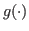 は分散関数で，
ただし，計算の際には  を
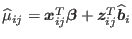
で置き換えて
を
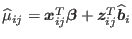
で置き換えて
と近似する。 反復計算によってこれを行うことを，疑似最尤推定法 pseudo-likelihood estimation や，疑似制約付き最尤推定法 pseudo-restricted-likelihood estimation と呼ぶ3。
主な引数：
以下の4段階で用いる：
例えば，
と x に対して直線的に増加するとすれば，分散関数は
となり，
> vf1 <- varFixed(~x)と表現できる。
層別化変数 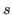 の各レベルのために異なった分散を持つようなモデルを表す。
となり，対応する分散関数は
となる。
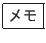
パラメータについては，分散に対して2乗のオーダーであることに注意。SDに対しては1乗のオーダーになる。
lme() で返されるのはあくまで である。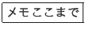
層別化変数を s とすると，
> vf1 <- varIdent(form = ~ 1 | s)のように指定する。
分散共変量の絶対値に従い分散が増減するケースをモデル化できる：
分散関数は，
である。
例えば，
> vf1 <- varIPower(value = 0, form = ~ fitted(.)) # デフォルト > vf1 <- varIPower(1) # value（つまり\delta）の初期値が1のように指定する。
分散モデルは，
であり，分散関数は，
である。
例えば，
> vf1 <- varIExp(form = ~ x | Sex) # Sex によってxとの指数関数的関係が異なる > vf1 <- varIExp(form = ~ x | Sex, fixed = c(Female = 0)) # Female の分散は一定に固定のように指定する。
対応する分散関数をかけ合わせることにより複数の分散モデルを組み合わせることができる。
グループ内誤差
 が位置ベクトル
が位置ベクトル
 に関係すると仮定する。
に関係すると仮定する。
相関構造は等方的 isotropic であると仮定する。
相関パラメータを  として，
として，
と表現する。
自己相関関数  として
として
と定義する。
同じ群に属するすべてのグループ内誤差中の等しい相関性を仮定。
 を級内相関係数という。
を級内相関係数という。
上記のモデルでは， は正定値であれば負でもよい。
は正定値であれば負でもよい。
時系列データに対しては，複合対称相関モデルは制約がきつすぎる。
相関はすべて異なるパラメータとなる。複合対象に対してパラメータが過剰。
Box-Jenkins モデルとも。
等分散のノイズ項  （
（
 ）を用いて，
次数
）を用いて，
次数  の自己回帰モデル AR(
の自己回帰モデル AR( )：
)：
AR(1) モデル：
MA(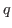 ) モデルに対する相関関数は
である。
主な引数：
以下の4段階で用いる：
> cs1 <- corCompSymm(value = 0, form = ~ 1 | Subject)
> cs1 <- corSymm(value = c(0.2, 0.1, -0.1, 0, 0.2, 0), form = ~ 1 | Subject) # 相関行列の上三角成分を左上から
> cs1 <- corAR1(value = 0.8, form = ~ 1 | Subject) # 初期値 0.8，Subject がグループ化変数
> cs1 <- corARMA(value = 0.4, form = ~ 1 | Subject, q=1) # \theta=0.4, 次数=1のMA(1) > cs1 <- corARMA(value = c(0.8, 0.4), form = ~ 1 | Subject, p=1, q=1) # \phi=0.8, \theta=0.4, ARMA(1,1)
正規化した残差
の診断プロットを利用すると有用。
あてはめた結果から，経験的自己相関係数を
> ACF(fm1)で得る。 また，有意水準
> plot(ACF(fm1, maxlag = 10), alpha = 0.05)でプロットできる。
> acf(residuals(fm1), lag.max=200, col="blue") > pacf(residuals(fm1), lag.max=10) > Box.test(residuals(fm1), type="Ljung")で自己相関係数のプロットと独立性の検定を行える。
高流量血液透析器の限外濾過速度に関するデータ Dialyzer を用いる。
> data(Dialyzer)
> head(Dialyzer)
Grouped Data: rate ~ pressure | Subject
Subject QB pressure rate index
1 1 200 0.240 0.645 1
2 1 200 0.505 20.115 2
3 1 200 0.995 38.460 3
4 1 200 1.485 44.985 4
5 1 200 2.020 51.765 5
6 1 200 2.495 46.575 6
> summary(Dialyzer)
Subject QB pressure rate index
10 : 7 200:70 Min. :0.2350 Min. : 0.645 Min. :1
8 : 7 300:70 1st Qu.:0.5125 1st Qu.:20.216 1st Qu.:2
2 : 7 Median :1.5000 Median :42.315 Median :4
6 : 7 Mean :1.5375 Mean :37.398 Mean :4
3 : 7 3rd Qu.:2.4813 3rd Qu.:50.389 3rd Qu.:6
5 : 7 Max. :3.0300 Max. :64.830 Max. :7
(Other):98
> plot(Dialyzer, outer = T, aspect = 1)
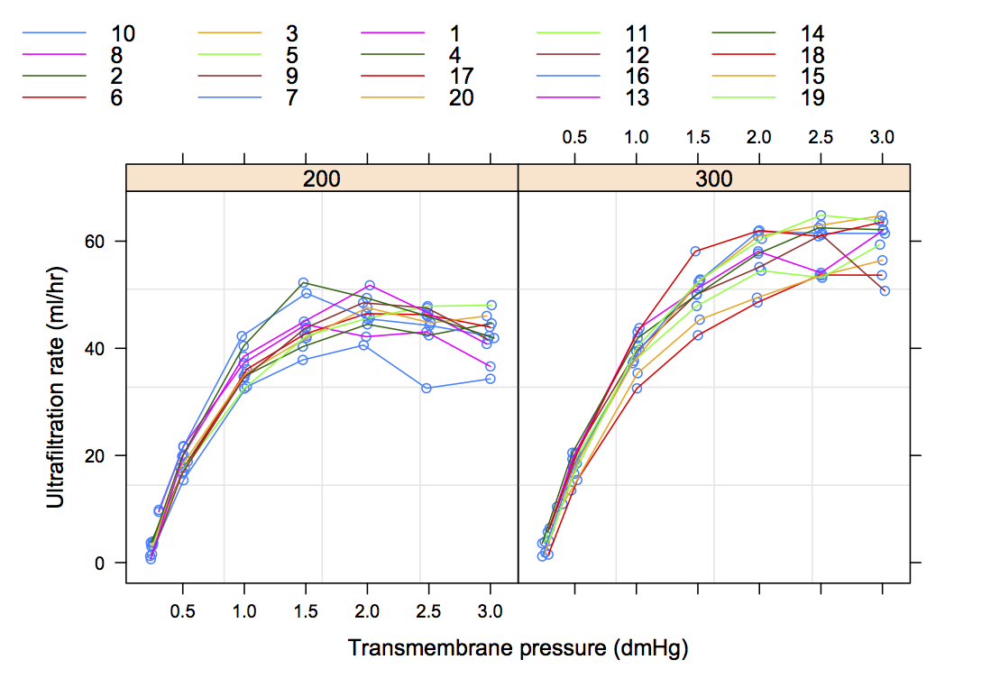
まず，等分散モデルをあてはめる：
> fm1 <- lme(rate ~ (pressure + I(pressure^2) + I(pressure^3))*QB, random = ~ pressure + I(pressure^2), data = Dialyzer)
> fm1
Linear mixed-effects model fit by REML
Data: Dialyzer
Log-restricted-likelihood: -325.3238
Fixed: rate ~ (pressure + I(pressure^2) + I(pressure^3)) * QB
(Intercept) pressure I(pressure^2) I(pressure^3) QB300 pressure:QB300
-14.3625687 80.7766159 -34.6288034 4.6596040 -0.6652408 -1.7248491
I(pressure^2):QB300 I(pressure^3):QB300
5.8438465 -1.0735574
Random effects:
Formula: ~pressure + I(pressure^2) | Subject
Structure: General positive-definite, Log-Cholesky parametrization
StdDev Corr
(Intercept) 1.532473 (Intr) pressr
pressure 4.934547 -0.514
I(pressure^2) 1.478597 0.314 -0.944
Residual 1.826830
Number of Observations: 140
Number of Groups: 20
残差プロットは以下の通り：
> plot(fm1, resid(.) ~ pressure, abline = 0)
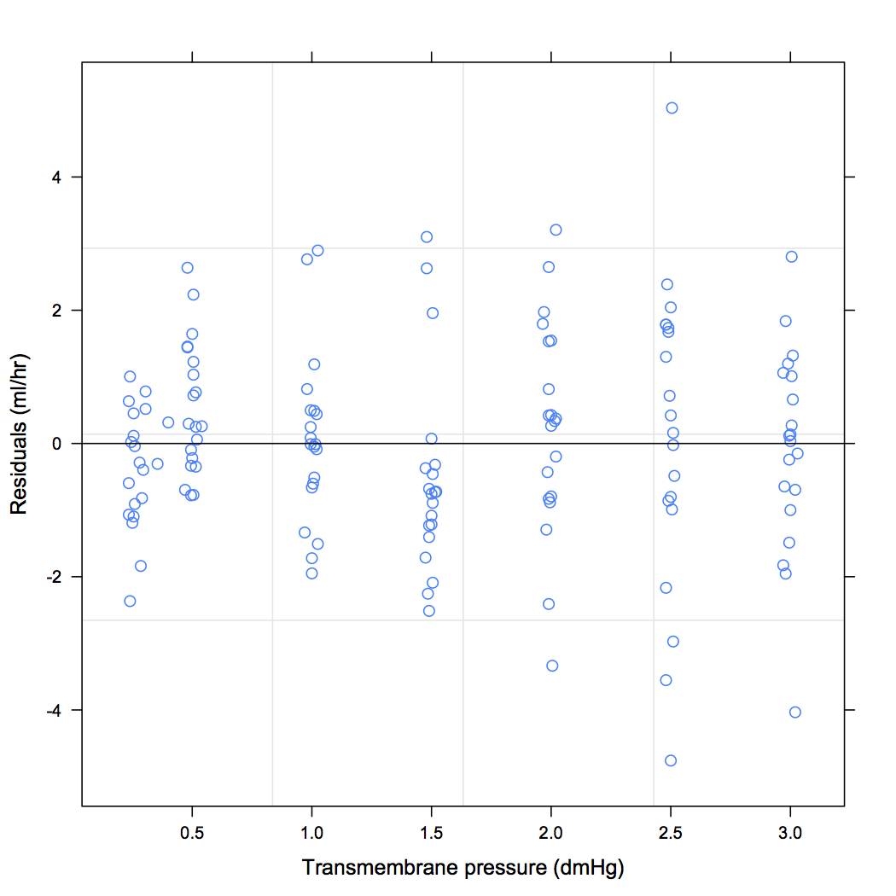
pressure の値とともに残差分散が変化する様子がわかる。 そこで，varPower を用いて不等分散モデルをあてはめる。
> fm2 <- update(fm1, weight = varPower(form = ~ pressure))
> fm2
Linear mixed-effects model fit by REML
Data: Dialyzer
Log-restricted-likelihood: -311.9874
Fixed: rate ~ (pressure + I(pressure^2) + I(pressure^3)) * QB
(Intercept) pressure I(pressure^2) I(pressure^3) QB300 pressure:QB300
-15.2185751 83.8268752 -36.9922026 5.1515465 -1.1117522 -0.4276497
I(pressure^2):QB300 I(pressure^3):QB300
4.9367300 -0.8965849
Random effects:
Formula: ~pressure + I(pressure^2) | Subject
Structure: General positive-definite, Log-Cholesky parametrization
StdDev Corr
(Intercept) 1.847321 (Intr) pressr
pressure 5.240053 -0.516
I(pressure^2) 1.599271 0.341 -0.952
Residual 1.373620
Variance function:
Structure: Power of variance covariate
Formula: ~pressure
Parameter estimates:
power
0.6549734 ### <- \sigma^2 * |pressure|^(2*0.65)
Number of Observations: 140
Number of Groups: 20
不等分散モデルをあてはめた結果について，QB ごとに残差プロット（素点と標準化）を描いてみる。
> library(gridExtra) > plot1 <- plot(fm2, resid(.) ~ pressure | QB, abline = 0) > plot2 <- plot(fm2, resid(., type = "p") ~ pressure | QB, abline = 0) > grid.arrange(plot1, plot2, nrow = 2)
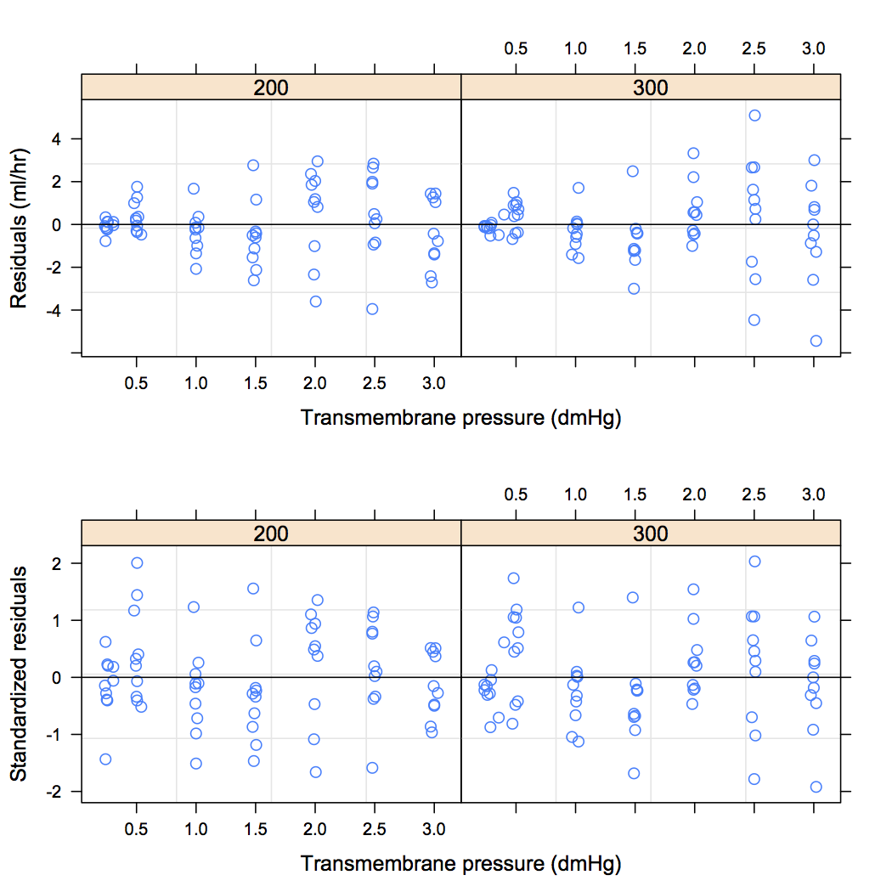
この場合，不等分散モデルをあてはめているので，残差の大きさはグループ内誤差SDで標準化したもので評価する必要がある。 標準化残差分散は pressure と関係なさそうである。
経験的自己相関係数のプロットを描く：
> plot(ACF(fm2), alpha = 0.05)
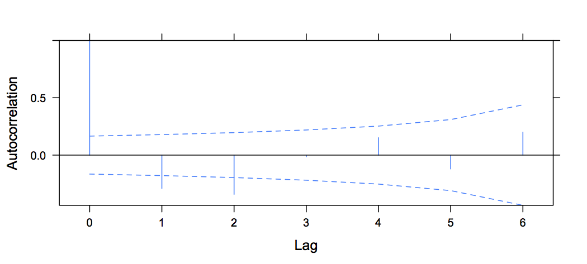
corAR1 を用いた自己回帰モデルのあてはめ：
> fm3 <- update(fm2, correlation = corAR1())
> summary(fm3)
Linear mixed-effects model fit by REML
Data: Dialyzer
AIC BIC logLik
655.3675 704.3751 -310.6837
Random effects:
Formula: ~pressure + I(pressure^2) | Subject
Structure: General positive-definite, Log-Cholesky parametrization
StdDev Corr
(Intercept) 1.662082 (Intr) pressr
pressure 4.706011 -0.494
I(pressure^2) 1.370782 0.336 -0.968
Residual 1.799898
Correlation Structure: AR(1)
Formula: ~1 | Subject
Parameter estimate(s):
Phi
0.4188017
Variance function:
Structure: Power of variance covariate
Formula: ~pressure
Parameter estimates:
power
0.6465074
Fixed effects: rate ~ (pressure + I(pressure^2) + I(pressure^3)) * QB
Value Std.Error DF t-value p-value
(Intercept) -15.43908 0.786395 114 -19.632721 0.0000
pressure 84.53803 2.787022 114 30.332745 0.0000
I(pressure^2) -37.46157 2.019126 114 -18.553364 0.0000
I(pressure^3) 5.23007 0.440083 114 11.884275 0.0000
QB300 -1.18788 1.164437 18 -1.020135 0.3212
pressure:QB300 -0.22372 4.067865 114 -0.054996 0.9562
I(pressure^2):QB300 4.82163 2.936003 114 1.642241 0.1033
I(pressure^3):QB300 -0.87987 0.635391 114 -1.384772 0.1688
Correlation:
(Intr) pressr I(p^2) I(p^3) QB300 p:QB30 I(^2):
pressure -0.748
I(pressure^2) 0.650 -0.903
I(pressure^3) -0.561 0.757 -0.959
QB300 -0.675 0.505 -0.439 0.379
pressure:QB300 0.512 -0.685 0.619 -0.518 -0.767
I(pressure^2):QB300 -0.447 0.621 -0.688 0.659 0.675 -0.909
I(pressure^3):QB300 0.388 -0.524 0.664 -0.693 -0.589 0.769 -0.960
Standardized Within-Group Residuals:
Min Q1 Med Q3 Max
-1.89413213 -0.51221685 -0.01181683 0.49966742 1.66828309
Number of Observations: 140
Number of Groups: 20
> intervals(fm3)
Approximate 95% confidence intervals
Fixed effects:
lower est. upper
(Intercept) -16.9969243 -15.4390811 -13.8812379
pressure 79.0169626 84.5380320 90.0591014
I(pressure^2) -41.4614444 -37.4615722 -33.4617000
I(pressure^3) 4.3582678 5.2300691 6.1018704
QB300 -3.6342747 -1.1878834 1.2585079
pressure:QB300 -8.2821253 -0.2237169 7.8346914
I(pressure^2):QB300 -0.9945734 4.8216259 10.6378251
I(pressure^3):QB300 -2.1385754 -0.8798713 0.3788327
attr(,"label")
[1] "Fixed effects:"
Random Effects:
Level: Subject
lower est. upper
sd((Intercept)) 0.9347163 1.6620816 2.9554584
sd(pressure) 2.6468070 4.7060108 8.3672658
sd(I(pressure^2)) 0.6774325 1.3707815 2.7737698
cor((Intercept),pressure) -0.8390218 -0.4937365 0.1350511
cor((Intercept),I(pressure^2)) -0.3746289 0.3361302 0.7980590
cor(pressure,I(pressure^2)) -0.9975856 -0.9680166 -0.6413355
Correlation structure:
lower est. upper
Phi -0.3592794 0.4188017 0.8533999
attr(,"label")
[1] "Correlation structure:"
Variance function:
lower est. upper
power 0.3961037 0.6465074 0.8969111
attr(,"label")
[1] "Variance function:"
Within-group standard error:
lower est. upper
0.912453 1.799898 3.550464
Taichi Okumura